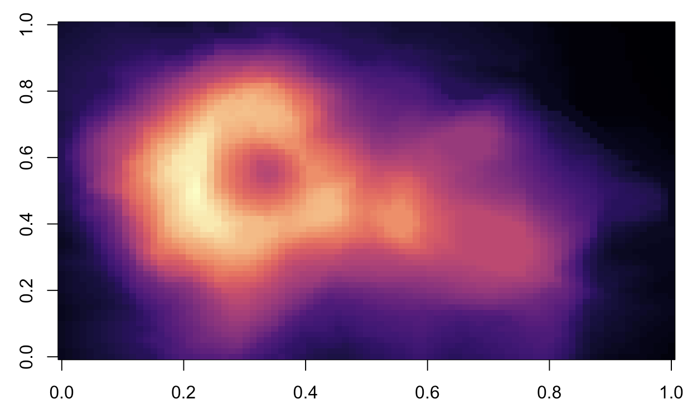

I have started using Quarto in December 2022. In this blog, I mainly share code as I learn and produce. Most of the code shall involve documentation, statistics, slides, and version control. I mainly use Quarto with RStudio on a MacBook. Please keep this in mind in case you are using a different machine.
2023
No matching items
2022
Basics of Quarto documentation
writing
markdown
citations
quarto
zotero
Starting with Quarto and how to write a basic document

Git and GitHub with RStudio On Mac
version control
markdown
git
github
quarto
RStudio
Mac
How to get started with version control on Mac

Notes on Grad School Experience
PhD
Grad School
Research
Dissertation
goals
How did I complete my PhD?

No matching items
2021
No matching items
2020
No matching items
2019
No matching items
2018
No matching items
2017
No matching items
2016
No matching items